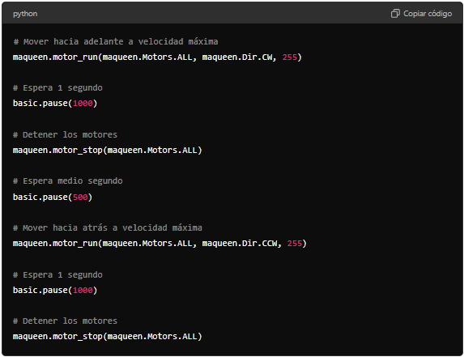
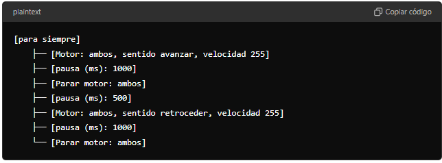
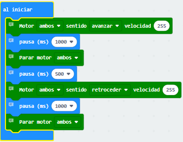

1. Primeros pasos con Maqueen
Planteamiento del problema
El objetivo de este programa es controlar un robot Maqueen utilizando la micro para que realice una secuencia específica de movimientos. El robot debe avanzar hacia adelante a máxima velocidad durante 1 segundo, detenerse por medio segundo, luego retroceder a máxima velocidad durante 1 segundo, y finalmente detenerse nuevamente. Esta secuencia de movimientos puede utilizarse para realizar maniobras simples, como simular un movimiento de ida y vuelta.
Solución con MICROPYTHON
Código en Python para micro:bit:

Explicación del Código:
-
Mover hacia adelante a velocidad máxima
maqueen.motor_run(maqueen.Motors.ALL, maqueen.Dir.CW, 255)- Propósito: Esta línea hace que el robot avance hacia adelante a su velocidad máxima.
- Explicación:
maqueen.motor_run: Esta función se utiliza para activar los motores del robot.maqueen.Motors.ALL: Este parámetro indica que ambos motores, izquierdo (M1) y derecho (M2), deben activarse.maqueen.Dir.CW: Este parámetro indica la dirección en la que deben girar los motores,CWsignifica "Clockwise" (en sentido horario), lo que hace que el robot avance.255: Este es el valor de la velocidad, donde 255 es la velocidad máxima.
-
Espera 1 segundo
basic.pause(1000)- Propósito: Pausa la ejecución del programa durante 1000 milisegundos (1 segundo).
- Explicación:
basic.pause(1000): Esta función detiene temporalmente el programa, permitiendo que el robot avance durante 1 segundo antes de realizar la siguiente acción.
-
Detener los motores
maqueen.motor_stop(maqueen.Motors.ALL)- Propósito: Esta línea detiene ambos motores del robot.
- Explicación:
maqueen.motor_stop: Esta función se usa para detener los motores.maqueen.Motors.ALL: Detiene ambos motores del robot, dejando el robot inmóvil.
-
Espera medio segundo
basic.pause(500)- Propósito: Pausa la ejecución del programa durante 500 milisegundos (medio segundo).
- Explicación:
basic.pause(500): Esta función detiene temporalmente el programa durante medio segundo, permitiendo que el robot permanezca quieto antes de ejecutar el siguiente movimiento.
-
Mover hacia atrás a velocidad máxima
maqueen.motor_run(maqueen.Motors.ALL, maqueen.Dir.CCW, 255)- Propósito: Hace que el robot retroceda a su velocidad máxima.
- Explicación:
maqueen.motor_run: Activa los motores del robot.maqueen.Motors.ALL: Este parámetro indica que ambos motores deben activarse.maqueen.Dir.CCW: Este parámetro indica la dirección en la que deben girar los motores,CCWsignifica "Counterclockwise" (en sentido antihorario), lo que hace que el robot retroceda.255: Es la velocidad máxima a la que el robot se moverá hacia atrás.
-
Espera 1 segundo
basic.pause(1000)- Propósito: Pausa la ejecución del programa durante 1 segundo.
- Explicación:
basic.pause(1000): Esta función detiene temporalmente el programa, permitiendo que el robot retroceda durante 1 segundo antes de detenerse.
-
Detener los motores
maqueen.motor_stop(maqueen.Motors.ALL)- Propósito: Detiene ambos motores del robot.
- Explicación:
maqueen.motor_stop: Detiene los motores del robot.maqueen.Motors.ALL: Detiene ambos motores, dejando el robot inmóvil después de completar el movimiento hacia atrás.
Solución con MAKECODE
Instrucciones para Implementar el Programa en MakeCode:
-
Instalar la extensión Maqueen:
- Paso 1: Abre MakeCode para micro.
- Paso 2: Ve a "Avanzado" -> "Extensiones".
- Paso 3: En la barra de búsqueda, escribe "Maqueen" y selecciona la extensión correspondiente para agregarla a tu proyecto.
-
Estructura de bloques en MakeCode:

Construcción de los bloques:
Apoyo visual
